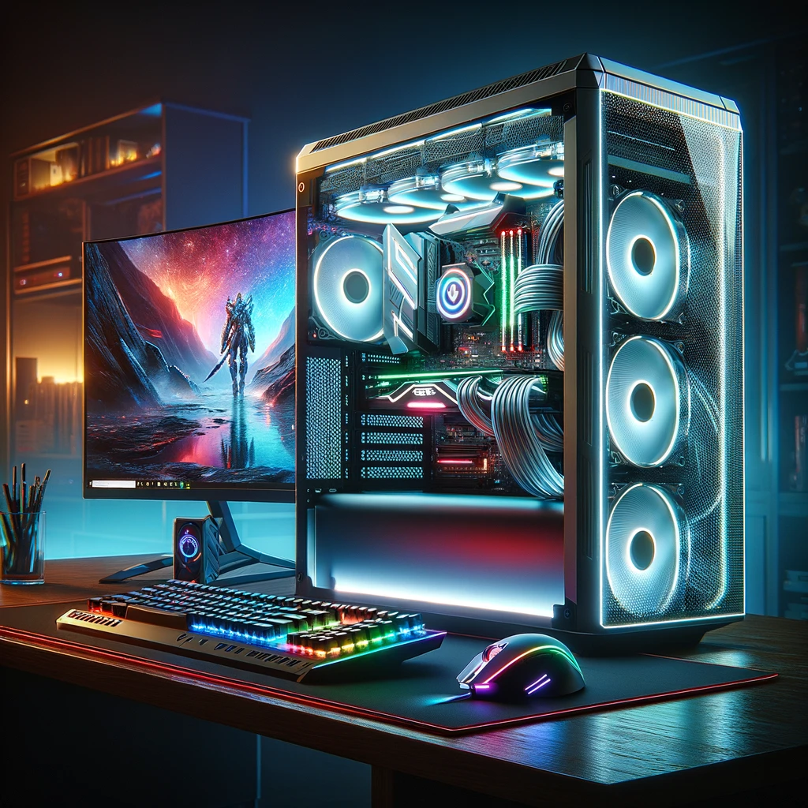

Name |
Description |
Graphics |
|---|---|---|
Gaming PC |
A gaming PC stands as the pinnacle of versatility and power in the realm of video gaming. Unlike their console counterparts, gaming PCs can be custom-built or pre-built to cater to a wide range of performance requirements and budget constraints. They boast the ability to run games at the highest possible settings, with frame rates and resolutions that consoles may not match, thanks to their powerful CPUs, high-end graphics cards, and ample RAM. Beyond gaming, these PCs serve as multifunctional machines capable of handling intensive tasks like video editing, 3D rendering, and more. |  | Sony PlayStation |
The PlayStation, a product of Sony Interactive Entertainment, has been a household name in gaming since its inception in the mid-90s, evolving through several generations to its latest incarnation. It's celebrated for its exclusive titles, user-friendly interface, and robust online gaming services via the PlayStation Network. Each iteration of the PlayStation console has brought forward technological advancements in gaming, from the original unit's CD-ROM-based games to the latest version's high-fidelity graphics and VR capabilities. |
Microsoft Xbox |
The Xbox, developed by Microsoft, is another major player in the console gaming market, known for its powerful hardware, innovative features, and a strong lineup of exclusive games. Since its debut in the early 2000s, the Xbox has been at the forefront of integrating gaming with online services, exemplified by Xbox Live, which revolutionized online multiplayer gaming and digital distribution. The console has continuously pushed the boundaries of gaming technology, with the latest models supporting high-resolution gaming, cloud gaming, and backward compatibility with a vast catalog of games from previous generations. |